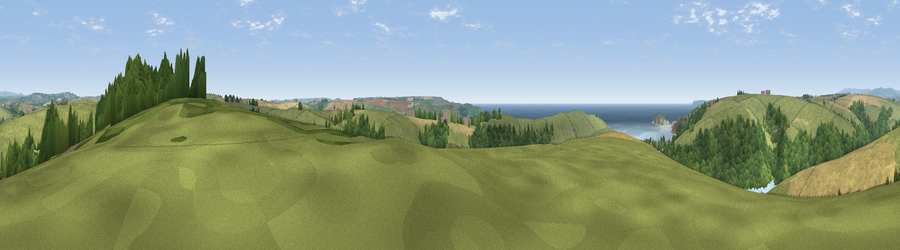

Viewpoint near Thurlestone
#4382 in England · top 11% of its area beats it · near Thurlestone · path 207 mWhere it is
The exact computed spot (SX 67775 44200). Click the marker for map links.
Public access: the nearest public right of way is about 207 m away — the final stretch may cross private land. Computed from Natural England's CRoW access layer and OpenStreetMap rights of way — not the legal definitive map. Always verify locally.
The view, rendered

A 360° render of this exact spot computed from the terrain model, tree cover and land cover — summer colours, afternoon light, calibrated against photographs of famous viewpoints. Real trees, hedges and buildings will differ in detail.
The panorama
Grey silhouette: terrain skyline in each direction (720 bearings, Earth curvature and refraction included). Dashed green: skyline with trees (+15 m) and buildings (+8 m) as obstacles. Blue strip: how far the ground is visible on each bearing.
Where the view opens
Wedge length = distance to the farthest visible ground on that bearing (vegetation-aware). Rings at 10, 25 and 50 km.
What fills the view
53% grassland · 20% woodland · 17% cropland · 9% water
Angular shares of the visible panorama (visual magnitude), not map area. Landscape diversity 0.52 (0–1 Shannon).
Key numbers
More beautiful places nearby
The staircase of upgrades: each row has a higher view potential than everything closer. Driving times are estimates from straight-line distance, calibrated against real road routing — check an actual route before setting out.
| Place | Direction | Drive | Score |
|---|---|---|---|
| Viewpoint near Thurlestone | SW · 2 km | ~4 min | 71.8 |
| Viewpoint near Bigbury-on-Sea | WNW · 2 km | ~6 min | 76.8 |
| Viewpoint near Hope | S · 5 km | ~12 min | 84.4 |
| Viewpoint near East Prawle | SE · 12 km | ~22 min | 84.6 |
| Pencarrow Head | W · 53 km | ~74 min | 86.0 |
| Viewpoint near Stenalees | W · 69 km | ~92 min | 88.0 |
| Viewpoint near Crackington Haven | NW · 74 km | ~98 min | 88.1 |
| Golden Cap | NE · 87 km | ~111 min | 88.7 |
50.28291, -3.85726 · source: screening · position refined by local search. Computed location — check access rights before visiting.